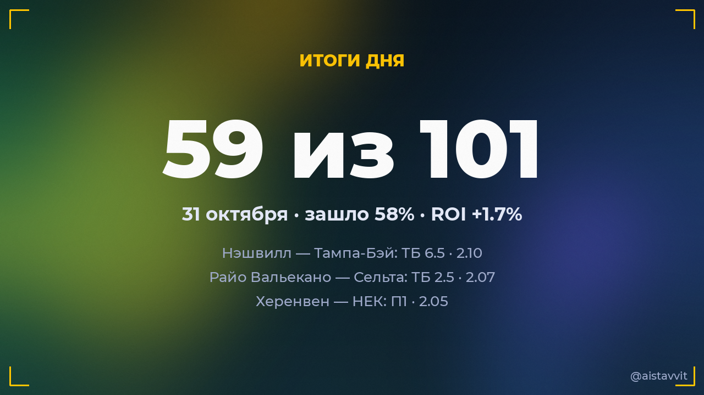

Итоги дня — 31 октября 2026
Зашло 59 из 101 основных прогнозов (58%), ROI дня +1.7%. Каждый прогноз учтён — и заходы, и промахи.

Все прогнозы дня
🏒 Колорадо — Калгари
ТБ 6.5 · 1.915:2 ✅
ТБ 6.5 · 1.915:2 ✅
⚽ Тоттенхэм — Кристал Пэлас
П1 · 1.532:0 ✅
П1 · 1.532:0 ✅
⚽ Мехелен — Генк
1X · 1.851:0 ✅
1X · 1.851:0 ✅
⚽ Андерлехт — Вестерло
П1 · 1.554:1 ✅
П1 · 1.554:1 ✅
⚽ Ковентри Сити — Сандерленд
ТБ 2.5 · 1.923:1 ✅
ТБ 2.5 · 1.923:1 ✅
🏒 Монреаль — Питтсбург
ТБ 6.5 · 1.855:4 ✅
ТБ 6.5 · 1.855:4 ✅
⚽ Болтон Уондерерс — Бристоль Сити
ТБ 2.5 · 1.762:3 ✅
ТБ 2.5 · 1.762:3 ✅
⚽ Райо Вальекано — Сельта
ТБ 2.5 · 2.073:0 ✅
ТБ 2.5 · 2.073:0 ✅
⚽ Фейеноорд — Фортуна
Обе забьют — да · 1.711:1 ✅
Обе забьют — да · 1.711:1 ✅
⚽ Морейренсе — Эштрела
ТБ 2.5 · 1.922:1 ✅
ТБ 2.5 · 1.922:1 ✅
⚽ Пачука — Тигрес УАНЛ
ТБ 2.5 · 1.693:0 ✅
ТБ 2.5 · 1.693:0 ✅
🏀 Шарлотт Хорнетс — Филадельфия Сиксерс
П2 (с ОТ) · 1.89104:109 ✅
П2 (с ОТ) · 1.89104:109 ✅
⚽ Удинезе — Рома
П2 · 1.532:5 ✅
П2 · 1.532:5 ✅
⚽ Шарлотт — Орландо Сити
П1 · 1.834:0 ✅
П1 · 1.834:0 ✅
⚽ Пуэбла — УНАМ Пумас
Обе забьют — да · 1.611:2 ✅
Обе забьют — да · 1.611:2 ✅
⚽ Лос-Анджелес Гэлакси — Остин
П1 и ТБ 1.5 · 1.634:1 ✅
П1 и ТБ 1.5 · 1.634:1 ✅
🏀 Милуоки Бакс — Кливленд
ТБ 235.5 · 1.93111:136 ✅
ТБ 235.5 · 1.93111:136 ✅
🏒 Детройт — Сент-Луис
ТБ 5.5 · 1.804:5 ✅
ТБ 5.5 · 1.804:5 ✅
⚽ Херенвен — НЕК
П1 · 2.051:0 ✅
П1 · 2.051:0 ✅
⚽ Камбюр — Гоу Эхед Иглз
1X · 1.624:0 ✅
1X · 1.624:0 ✅
🏒 Бостон — Чикаго
ТБ 6.5 · 2.055:4 ✅
ТБ 6.5 · 2.055:4 ✅
⚽ Цинциннати — Филадельфия Юнион
1X · 1.501:0 ✅
1X · 1.501:0 ✅
⚽ Нью-Йорк Сити — Клёб де Фут Монреаль
Обе забьют — да · 1.631:1 ✅
Обе забьют — да · 1.631:1 ✅
⚽ Порту — Эшторил
ТБ 2.5 · 1.654:0 ✅
ТБ 2.5 · 1.654:0 ✅
🏒 Нэшвилл — Тампа-Бэй
ТБ 6.5 · 2.105:4 ✅
ТБ 6.5 · 2.105:4 ✅
⚽ Барселона — Алавес
ТБ 3.5 · 1.566:1 ✅
ТБ 3.5 · 1.566:1 ✅
⚽ Аякс — АЗ
П1 · 1.641:0 ✅
П1 · 1.641:0 ✅
🏀 Юта Джаз — Портленд
ТМ 231.5 · 1.9390:112 ✅
ТМ 231.5 · 1.9390:112 ✅
⚽ Депортиво Риестра — Talleres (Córdoba)
X2 · 1.610:3 ✅
X2 · 1.610:3 ✅
⚽ Васланд-Беверен — Юнион
ТБ 2.5 · 1.551:2 ✅
ТБ 2.5 · 1.551:2 ✅
⚽ Вулверхэмптон — Кардифф Сити
П1 · 1.653:0 ✅
П1 · 1.653:0 ✅
⚽ Килмарнок — Сент-Джонстон
ТБ 2.5 · 1.702:2 ✅
ТБ 2.5 · 1.702:2 ✅
🏀 Голден Стэйт Валкириз — Атланта Дрим
П1 (с ОТ) · 1.8768:63 ✅
П1 (с ОТ) · 1.8768:63 ✅
⚽ Боруссия М — Падерборн 07
X2 · 1.810:0 ✅
X2 · 1.810:0 ✅
🎾 Диана Шнайдер — Миа Поганкова
Будет 2 сета · 1.802:0 ✅
Будет 2 сета · 1.802:0 ✅
⚽ Колорадо Рэпидз — Чикаго Файр
ТБ 2.5 · 1.582:4 ✅
ТБ 2.5 · 1.582:4 ✅
⚽ Erzurum BB — Чорум
ТБ 2.5 · 1.941:3 ✅
ТБ 2.5 · 1.941:3 ✅
⚽ Норвич Сити — Уотфорд
П1 · 1.543:2 ✅
П1 · 1.543:2 ✅
⚽ Сток Сити — Престон Норт Энд
П1 · 1.742:0 ✅
П1 · 1.742:0 ✅
⚽ Линкольн Сити — Бирмингем Сити
ТБ 2.5 · 1.891:3 ✅
ТБ 2.5 · 1.891:3 ✅
⚽ Леванте — Атлетико
П2 · 1.530:2 ✅
П2 · 1.530:2 ✅
⚽ Гвадалахара — Атланте
Обе забьют — да · 1.604:2 ✅
Обе забьют — да · 1.604:2 ✅
🎾 Анна Блинкова — Нома Ноа Акугуэ
Будет 2 сета · 1.860:2 ✅
Будет 2 сета · 1.860:2 ✅
⚽ Аль-Таавун — Аль-Иттифак
X2 · 1.511:1 ✅
X2 · 1.511:1 ✅
🎾 Хулия Риера — Юлия Грабер
Будет 2 сета · 1.740:2 ✅
Будет 2 сета · 1.740:2 ✅
🎾 Валантен Вашро — Тейлор Фриц
Валантен Вашро возьмёт хотя бы сет · 1.512:0 ✅
Валантен Вашро возьмёт хотя бы сет · 1.512:0 ✅
⚽ Миллуолл — Дерби Каунти
П1 · 1.684:1 ✅
П1 · 1.684:1 ✅
⚽ Болонья — Монца
П1 · 1.692:1 ✅
П1 · 1.692:1 ✅
🎾 Даниил Медведев — Карлос Алькарас
Победа: Карлос Алькарас · 1.560:2 ✅
Победа: Карлос Алькарас · 1.560:2 ✅
🏀 Хьюстон Рокетс — Оклахома-Сити Тандер
П1 (с ОТ) · 1.70119:98 ✅
П1 (с ОТ) · 1.70119:98 ✅
🏀 Мемфис Гриззлис — Сакраменто Кингз
ТБ 229.5 · 1.91136:105 ✅
ТБ 229.5 · 1.91136:105 ✅
⚽ Мидлсбро — Чарльтон Атлетик
Ф1 (−1.5) · 1.723:0 ✅
Ф1 (−1.5) · 1.723:0 ✅
⚽ Халл Сити — Ипсвич Таун
ТБ 2.5 · 1.802:2 ✅
ТБ 2.5 · 1.802:2 ✅
⚽ Аль-Фейха — Аль-Фейсали
1X · 1.564:1 ✅
1X · 1.564:1 ✅
⚽ Брентфорд — Ноттингем Форест
П1 · 2.042:0 ✅
П1 · 2.042:0 ✅
⚽ Вердер — Хоффенхайм
1X · 1.612:0 ✅
1X · 1.612:0 ✅
⚽ Шальке 04 — РБ Лейпциг
П2 · 1.840:2 ✅
П2 · 1.840:2 ✅
🏒 Даллас — Коламбус
ТМ 5.5 · 1.833:1 ✅
ТМ 5.5 · 1.833:1 ✅
⚽ Милан — Интер
ТБ 2.5 · 1.603:1 ✅
ТБ 2.5 · 1.603:1 ✅
🏀 Нью-Орлеан Пеликанс — Атланта Хокс
ТБ 240.5 · 1.91121:99 ❌
ТБ 240.5 · 1.91121:99 ❌
🏒 Лос-Анджелес — Баффало
ТБ 5.5 · 1.742:3 ❌
ТБ 5.5 · 1.742:3 ❌
🏒 Сан-Хосе — Оттава
ТБ 6.5 · 1.891:5 ❌
ТБ 6.5 · 1.891:5 ❌
⚽ Велес Сарсфилд — Сан-Лоренсо
П1 · 1.942:2 ❌
П1 · 1.942:2 ❌
🏒 Ванкувер — Торонто
ТБ 6.5 · 1.802:4 ❌
ТБ 6.5 · 1.802:4 ❌
⚽ Монтеррей — Тихуана
П1 · 1.513:3 ❌
П1 · 1.513:3 ❌
🏀 Сан-Антонио Сперс — Миннесота Тимбервулвз
ТМ 228.5 · 1.95121:111 ❌
ТМ 228.5 · 1.95121:111 ❌
⚽ Сан-Хосе Эртквейкс — Реал Солт-Лейк
X2 · 1.572:1 ❌
X2 · 1.572:1 ❌
⚽ Астон Вилла — Фулхэм
ТБ 2.5 · 1.661:1 ❌
ТБ 2.5 · 1.661:1 ❌
🎾 Татьяна Мария — Фиона Ферро
Победа: Фиона Ферро · 1.812:1 ❌
Победа: Фиона Ферро · 1.812:1 ❌
⚽ Эстудиантес — Instituto (Córdoba)
Обе забьют — нет · 1.663:3 ❌
Обе забьют — нет · 1.663:3 ❌
🎾 Бьянка Андрееску — Кароль Монне
Кароль Монне возьмёт хотя бы сет · 1.532:0 ❌
Кароль Монне возьмёт хотя бы сет · 1.532:0 ❌
🎾 Лейла Фернандес — Камилла Рахимова
Камилла Рахимова возьмёт хотя бы сет · 1.632:0 ❌
Камилла Рахимова возьмёт хотя бы сет · 1.632:0 ❌
⚽ Труа — Ле-Ман
ТБ 2.5 · 1.792:0 ❌
ТБ 2.5 · 1.792:0 ❌
⚽ Бернли — Портсмут
ТБ 2.5 · 1.860:0 ❌
ТБ 2.5 · 1.860:0 ❌
🎾 Ксинран Сун — Хэрриет Дарт
Будет 2 сета · 1.801:2 ❌
Будет 2 сета · 1.801:2 ❌
🎾 Кейтлин Кеведо — Лилли Таггер
Победа: Кейтлин Кеведо · 1.510:2 ❌
Победа: Кейтлин Кеведо · 1.510:2 ❌
⚽ Челси — Манчестер Юнайтед
X2 · 1.972:0 ❌
X2 · 1.972:0 ❌
⚽ Коджаэлиспор — Кайкур Ризеспор
ТБ 2.5 · 1.870:0 ❌
ТБ 2.5 · 1.870:0 ❌
⚽ Аугсбург — Фрайбург
1X · 1.651:2 ❌
1X · 1.651:2 ❌
⚽ Байер — Штутгарт
П1 · 1.782:4 ❌
П1 · 1.782:4 ❌
🎾 Наухани Виториа Леме Да Силва — Алис Тюбелло
Победа: Наухани Виториа Леме Да Силва · 1.500:2 ❌
Победа: Наухани Виториа Леме Да Силва · 1.500:2 ❌
⚽ Мотеруэлл — Сент-Миррен
X2 · 1.981:0 ❌
X2 · 1.981:0 ❌
⚽ Манчестер Сити — Брайтон
П1 · 1.620:1 ❌
П1 · 1.620:1 ❌
⚽ Суонси Сити — Блэкберн Роверс
X2 · 2.004:0 ❌
X2 · 2.004:0 ❌
⚽ Вест Хэм — Вест Бромвич Альбион
П1 · 1.611:3 ❌
П1 · 1.611:3 ❌
⚽ Борнмут — Лидс Юнайтед
ТБ 2.5 · 1.832:0 ❌
ТБ 2.5 · 1.832:0 ❌
⚽ Саутгемптон — Куинз Парк Рейнджерс
X2 · 1.744:1 ❌
X2 · 1.744:1 ❌
⚽ Спортинг Канзас-Сити — Даллас
П2 · 1.791:1 ❌
П2 · 1.791:1 ❌
🎾 Эльза Жакмо — Алина Чараева
Будет 2 сета · 1.731:2 ❌
Будет 2 сета · 1.731:2 ❌
⚽ Фенербахче — Goztepe
Ф1 (−1.5) · 1.871:2 ❌
Ф1 (−1.5) · 1.871:2 ❌
🎾 Иржи Леxечка — Ян-Леннард Штруфф
Будет 2 сета · 1.862:1 ❌
Будет 2 сета · 1.862:1 ❌
🎾 Александр Зверев — Алекс де Минор
Будет 2 сета · 1.771:2 ❌
Будет 2 сета · 1.771:2 ❌
⚽ Бетис — Малага
Ф1 (−1.5) · 1.892:1 ❌
Ф1 (−1.5) · 1.892:1 ❌
⚽ Бавария — Боруссия Д
Ф1 (−1.5) · 1.782:2 ❌
Ф1 (−1.5) · 1.782:2 ❌
⚽ ПСВ — Виллем II
Обе забьют — да · 1.567:0 ❌
Обе забьют — да · 1.567:0 ❌
⚽ Аль-Хиляль — Аль-Фатех
ТБ 3.5 · 1.612:0 ❌
ТБ 3.5 · 1.612:0 ❌
⚽ Коламбус Крю — Ди Си Юнайтед
Обе забьют — да · 1.523:0 ❌
Обе забьют — да · 1.523:0 ❌
🏒 Айлендерс — Эдмонтон
ТБ 6.5 · 2.100:4 ❌
ТБ 6.5 · 2.100:4 ❌
⚽ Коритиба — Витория
X2 · 1.572:0 ❌
X2 · 1.572:0 ❌
⚽ Сент-Луис Сити — Сан-Диего
П1 · 1.820:1 ❌
П1 · 1.820:1 ❌
⚽ Стандард — Кортрейк
П1 · 1.691:1 ❌
П1 · 1.691:1 ❌
← предыдущий день · следующий день → · статистика бота · прогнозы на сегодня · Telegram-канал